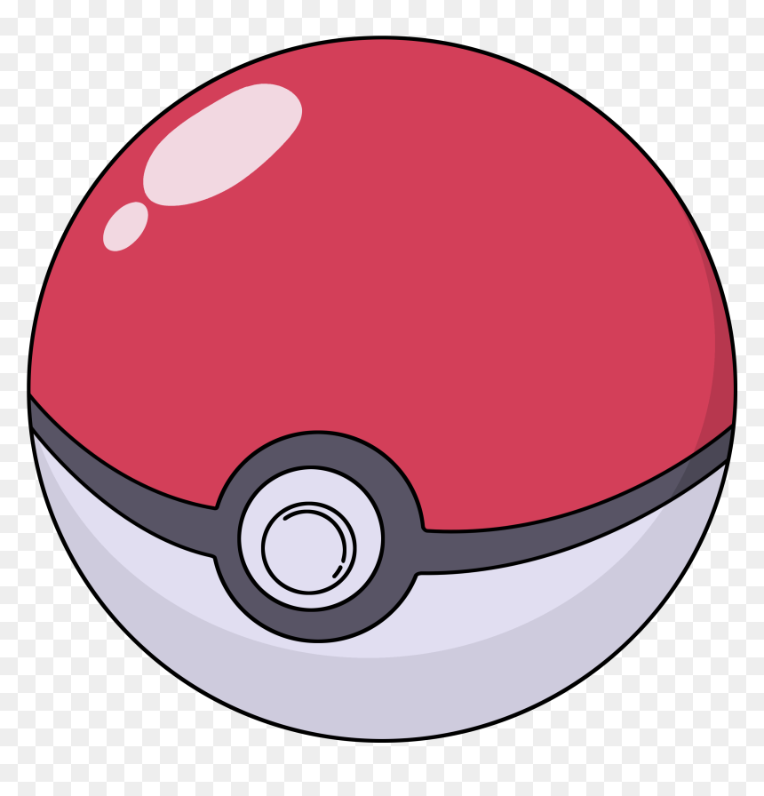

Mewtwo is a Pokémon created by science. It is a bipedal, humanoid creature with some feline features. It is primarily gray with a long, purple tail. On top of its head are two short, blunt horns, and it has purple eyes. A tube extends from the back of its skull to the top of its spine, bypassing its neck. It has a defined chest and shoulders, which resemble a breastplate. The three digits on each hand and foot have spherical tips. Its tail is thick at the base but thins before ending in a small bulb.
 According to the scientific logs found in the Pokémon Mansion of Cinnabar Island, Mewtwo was born from a pregnant Mew, found deep in the jungles of Guyana, whose embryo had been tampered with to alter its DNA. It was held and studied in the mansion where a scientist performed horrific gene-splicing experiments that made it vicious and extremely powerful. It eventually broke free of the Mansion, destroying it in the process, and fled. It can be encountered in Cerulean Cave, accessible only after a Trainer has proven his or her skill at the Indigo Plateau.